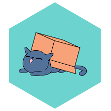
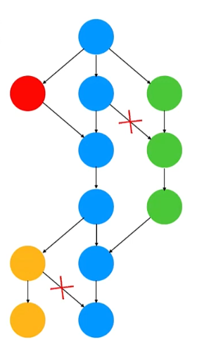
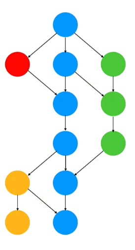

Изграждане на Scala приложение
Scala
Вече познаваме Scala доста добре
Обявявам всички за достойни функционални магьосници :)
Моделиране на домейни
- в последните лекции бяхме малко по-абстрактни
- но най-силно ползата от ФП се проличава когато
приложим изразните му средства в конкретни домейни
- Днес и следващата ще опитаме да изградим цялостно
конкретно приложение
- Функционално
- с HTTP, JSON, SQL база
- с бизнес домейн (уеб магазин)
Избор на IO ефект
(асинхронност и конурентност)
Всички без Future предоставят имплементация на Cats Effect type
class-овете
Cats Effect

“Framework to build composable typesafe functional concurrency
libraries and applications.” – Cats Effect
Cats Effect
- Type class-ове за конкурентни ефекти
- Иплементация на type class-овете, наречена IO
- Използва Fiber като лека конкурентна
абстракция
- Предоставя среда за изпълнение на Fiber-и
- Инструменти за менажиране на ресурси и споделяне на
информация между fiber-и
- Модерна конкурентност
- Богата на възможности и бърза,
въпреки абстракциите
Thread pools
- A work-stealing pool for computation, consisting of
exactly the same number of Threads as there are hardware processors
(minimum: 2)
- A single-threaded schedule dispatcher, consisting
of a single maximum-priority Thread which dispatches sleeps with high
precision
- An unbounded blocking pool, defaulting to zero
Threads and allocating as-needed (with caching and downsizing) to meet
demand for blocking operations
https://typelevel.org/cats-effect/docs/schedulers
MonadCancel
Разширява MonadError с опция за канселиране. Така
ефектът може да бъде в едно от следните състояния:
sealed trait Outcome[F[_], E, A]
final case class Succeeded[F[_], E, A](fa: F[A]) extends Outcome[F, E, A]
final case class Errored[F[_], E, A](e: E) extends Outcome[F, E, A]
final case class Canceled[F[_], E, A]() extends Outcome[F, E, A]
MonadCancel
trait MonadCancel[F[_], E] extends MonadError[F, E]:
// Gives us a cancelled instance of the effect. Every composition
// with it should cancel all the dependent effects
def canceled: F[Unit]
// Registers an action for when the effect is cancelled
def onCancel[A](fa: F[A], fin: F[Unit]): F[A]
// ... and some other methods
MonadCancel имплементира следната операция:
def bracket[A, B](acquire: F[A])(use: A => F[B])(release: A => F[Unit])
Това ни позволява да менажираме ресурси, които трябва да бъдат
затваряни.
- Първоначално ресурсът се acquire-ва
- след това го процесваме
- когато процесването свърши или получим грешка или
канселиране, тогава ресурсът се освобождава
- Повече за това по-късно
trait Unique[F[_]]:
def unique: F[Unique.Token]
Генерира гарантирано уникални (при сравнение) стойности
trait GenSpawn[F[_], E] extends MonadCancel[F, E] with Unique[F]
- Позволява конкурентност чрез изпълнение на ефекта в
конкурентен fiber – метод
start
- Изпълняват се в
compute pool-а
- Връща
IO[Fiber], който може да бъде
join-нат, за да изчакаме резултата му, или
cancel-иран
- много често от fiber-а, който го е стартирал
- Позволявани да изпълним множество ефекти
конкурентно (
both) или в състезание
(race)
- Не позволява комуникация между fiber-и преди
fiber-а да е завършил
- Можем да извлечем резултат от него само и
единствено чрез
join
parTupled и другите
Parallel операции водят до създаване на
fiber-и
Позволява безопасна обмяна на информация между fiber-и
trait GenConcurrent[F[_], E] extends GenSpawn[F, E]:
// ...
Благодарение на него са имплементирани структури като Ref, Queue,
Deferred и други
Spawn vs Concurrent


Clock
trait Clock[F[_]]:
def monotonic: F[FiniteDuration]
def realTime: F[FiniteDuration]
Дава ни текущото време
Позволява ни да sleep-ваме и да имплементираме
timeout-и.
Използва scheduler thread pool-а на Runtime-а.
Осигурява връзка към външния свят през синхронен API, като отлага
неговия страничен ефект:
trait Sync[F[_]] extends MonadCancel[F, Throwable] with Clock[F] with Unique[F] with Defer[F]:
// Синхронният код, който ще бъде отложен и превърнат
// във функционален ефект
def delay[A](thunk: => A): F[A]
// Блокиращ синхронен код – ще се изпълни в blocking thread pool-а
def blocking[A](thunk: => A): F[A]
// Като blocking, но позволяващо канселиране, използващо
// стандартния метод за канселиране на грешки в Java (interrupt)
def interruptible[A](thunk: => A): F[A]
Осигурява връзка към външния свят през асинхронен, callback-базиран
API:
trait Async[F[_]] extends AsyncPlatform[F] with Sync[F] with Temporal[F]:
// Позволява на IO да регистрира callback за тази операция
def async_[A](k: (Either[Throwable, A] => Unit) => Unit): F[A]
// По-обща версия, позволяваща и канселиране
def async[A](k: (Either[Throwable, A] => Unit) => F[Option[F[Unit]]]): F[A]
// Дава достъп до compute execution context-а, в който да се изпълни
// асинхронен код
def executionContext: F[ExecutionContext]
// Подменя comput execution context-а
def evalOn[A](fa: F[A], ec: ExecutionContext): F[A]
Безопасно управление на ресурси
Задача: имплементация на Channel
Ефектни Type class-ове
MonadCancel
– добавя възможност за канселиранеSpawn
– изпълнение на множество конкурентни fiber-аConcurrent
– възможност за описване на безопасен достъп до споделени ресурси (т.
нар. Ref) и за изчакване на ресурси (т. нар. Deferred)Clock
– описване на достъп до текущото времеTemporal
– приспиване на fiber за определено времеUnique
– генериране на уникални тоукъниSync
– адаптиране на синхронни изчисления (блокиращи и неблокиращи) към
ефектни (и асинхронни) такиваAsync
– адаптиране на callback-базиран асинхронен API към ефектен такъв
Зависимости
Чистите функции често рефирират към други конкретни функции.
def countHttpResourceWords(url: String): IO[Long] =
HttpUtils.get(url).map(_.body).map(countWords)
Често обаче бихме желали да се абстрахираме от конкретната
имплементация на тези функции
Зависимости
Във ФП това може да постигнем като функцията се подава като
параметър:
def countHttpResourceWords(retrieveUrl: String => HttpResponse)(url: String): IO[Long] =
retrieveUrl(url).map(_.body).map(countWords)
val asyncHttpCountHttpResourceWords = countHttpResourceWords(AsyncHttpClient.get) _
Dependency injection
- Този подход наричаме със сложното име “Dependency
injection”
- Вид inversion of control – функцията вече не
създава/реферира изрично конкретна зависимост, ами я приема като
параметър
Dependency injection чрез ООП модулност
trait HttpClient:
def get(url: String): IO[HttpResponse]
def post(url: String)(entity: Entity): IO[HttpResponse]
class ResourceProcessor(httpClient: HttpClient):
def countHttpResourceWords(url: String): IO[Long] =
httpClient.get(url).map(_.body).map(countWords)
val httpClient = new AsyncHttpClient
val resourceProcessor = new ResourceProcessor(httpClient)
resourceProcessor.countHttpResourceWords("http://example.org")
Защо dependency injection?
- Less coupling
- не сме зависими от конкретна имплементация
- винаги можем да я сменим с друга
- зависими сме единствено от конкретен интерфейс
- позволява тестване
- зависимостите на всеки компонент стават по-явни
Кой навързва зависимостите?
- По време на изпълнение – популярно в Java света (Guice, Spring)
- По време на компилация
Compile-time dependency injection – демо
Безопасно боравене с Resource-и
Тоест функционален вариант на using
Ефектни модули. Dependency Injection чрез Resource
Как да определим кои да са модулите
- инфраструктурни/библиотечни – занимаващи се с
конкретна библиотека или конкретна част от инфраструктурата на
приложението
- домейн модули – за всеки домейн/поддомейн
Уеб магазин
Домейни:
- Управление на потребителите (регистрация, информация за
потребителите, аутентикация)
- Инвентар (продукти, наличност и т.н.)
- Магазин и поръчки
Подход:
- Всеки от тях може да бъде отделен модул, развиващ
се сравнително самостоятелно
- Една промяна обикновено засяга един модул, който в
бъдеще може да бъде отделен и в отделен service
- Напълно естествено разделение
Разделение по слоеве?
- Например model, repository, service,
controller
- Почти винаги не работи добре за по-големи
приложения
- Една промяна често засяга няколко
модула/пакета
- Компоненти с по-силна връзка помежду си остават
по-отдалечени
- Понякога може да е полезно като второстепенно
разделение
Глобални ресурси?
- Много често приложенията съдържат ресурси, които
трябва да се инициализират (при стартиране) и зачистват (при спиране)
- thread pools
- връзки към базата
- уеб сървър
- …
- Масово в JVM приложение се среща това да не се
прави
- При подхода за DI, който разгледахме, това изисква
известно количество mutability
- Да видим как да постигнем безопасност чрез
Resource
Ефектни модули. Dependency Injection чрез Resource
Връзка със SQL база от данни
Doobie
- стъпва върху Cats и Cats Effect
- вътрешно използва JDBC
JSON библиотеки
- circe - базира се на
cats
- play-json -
първоначално част от Play Framework, извадена в последствие. Използва
jackson.
- json4s - “This
project aims to provide a single AST to be used by other scala json
libraries”
A JSON library for Scala powered by Cats
Circe workflow
Encoding
Data Model -> Encoder -> Json -> String
Decoding
String -> Parser -> Json -> HCursor -> Decoder -> Data Model
Encoders
trait Encoder[A]:
def apply(a: A): Json
Encoder examples
json/examples/IdCard
Decoding
String -> Parser -> Json -> HCursor -> Decoder -> Data Model
trait Parser:
def parse(input: String): Either[ParsingFailure, Json]
def decode[A: Decoder](input: String): Either[Error, A]
trait Decoder[A]:
def apply(c: HCursor): Decoder.Result[A]
Добавяне на circe към проект
val circeVersion = "0.14.1"
libraryDependencies ++= Seq(
"io.circe" %% "circe-core",
"io.circe" %% "circe-generic",
"io.circe" %% "circe-parser"
).map(_ % circeVersion)
circe-core - core data type and type classescirce-generic - uses Shapeless to auto-generate
Decoder/Encoder for case classes.circe-parser - Parser type class for decoding JSON
HTTP библиотеки
- http4s - based on cats-effect and
fs2 (streaming). Provides an API that can work over various HTTP
implementations
- akka-http
- full server- and client-side HTTP stack on top of akka-actor and
akka-stream
- Play Framework - build
on Akka
- Scalatra - influenced on Ruby’s
Sinatra. “microframework”
Помощни:
- tapir – описване на
endpoint-и като данни. Endpoint-ите могат да бъдат интерпретирани към
различни сървър и клиентски имплементации
- sttp – API за клиентски
HTTP. Може да се свърже с различни имплементации на HTTP клиент
http4s
Http applications are just a Kleisli function from a streaming
request to a polymorphic effect of a streaming response. So what’s the
problem?
Нека разгледаме как е изграден http4s
Започваме просто
case class Request(
method: Method,
uri: Uri,
body: EntityBody,
headers: Headers,
...
)
case class Response(
status: Status,
body: EntityBody,
headers: Headers,
...
)
type HttpApp = Request => IO[Response]
type HttpRoutes = Request => IO[Option[Response]]
object HttpRoutes:
def of(pf: PartialFunction[Request, IO[Response]]): HttpRoutes = pf.lift
type Http[F[_]] = Request => F[Response]
type HttpApp = Http[IO]
type HttpRoutes = Http[IO[Option[_]]]
type Http[F[_]] = Request => F[Response]
type HttpApp = Http[IO]
type OptionIO[A] = IO[Option[A]]
type HttpRoutes = Http[OptionIO]
type HttpRoutes = Http[[A] =>> IO[Option[A]]]
OptionT[F[_], A] is a light wrapper on an F[Option[A]]
import cats.data.OptionT
type Http[F[_]] = Request => F[Response]
type HttpApp = Http[IO]
type OptionTIO[A] = OptionT[IO, A]
type HttpRoutes = Http[OptionTIO]
Какво имаме накрая
type Http[F[_]] = Request => F[Response]
type HttpApp = Http[IO]
type HttpRoutes = Http[OptionT[IO, _]]
object HttpRoutes:
def of(pf: PartialFunction[Request, IO[Response]]): HttpRoutes =
req => OptionT(pf.lift(req).sequence)
Всъщност е малко по-различно
Kleisli
type Http[F[_]] = Kleisli[F, Request, Response]
Освен това - IO не е фиксирано
type HttpApp[F[_]] = Http[F]
type HttpRoutes[F[_]] = Http[OptionT[F, _]]
object HttpRoutes:
def of[F[_]: Defer: Applicative](pf: PartialFunction[Request[F], F[Response[F]]]): HttpRoutes[F] =
Kleisli(req => OptionT(Defer[F].defer(pf.lift(req).sequence)))
{kind=link}